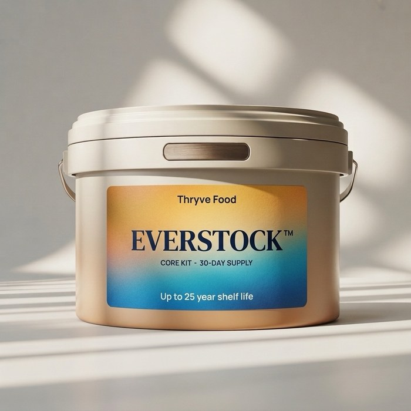
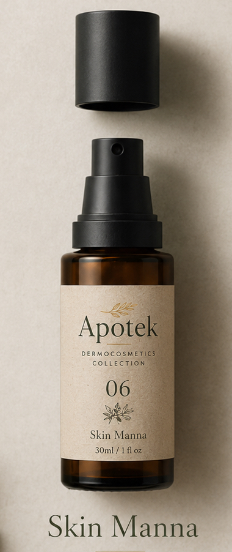
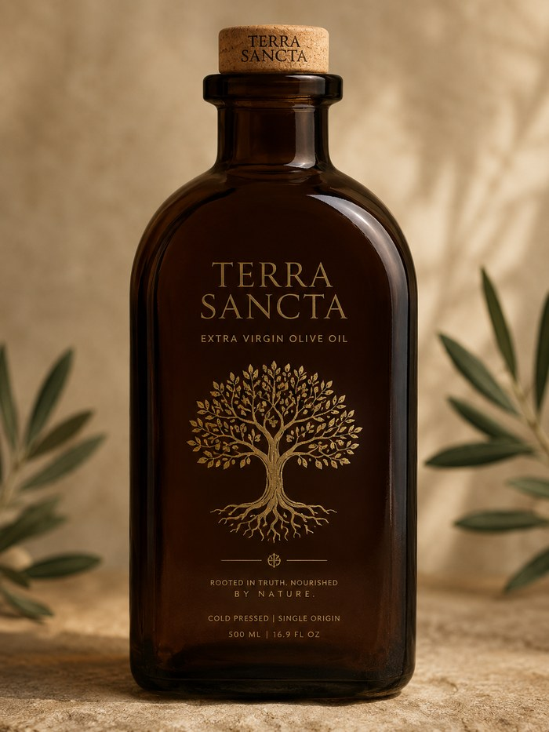

Module 01
Three products. One preserved raw-material base.
Each line draws on the same acquisition and preservation infrastructure, delivered by a named partner. Every batch traces back to where its value was actually created — pick a product, then trace it.

Everstock™
Core Kit — 30-day supply
EverstockDelivery partner · emergency premium line
Product spec
Illustrative reference SKU
FormatCore Kit — sealed bucket, retort pouches inside
Base grainWheat + legume blend
Shelf life25 years (label) — vs. 30 yr elsewhere
Ration30-day supply per kit
Deployment channelCrisis deployment, reserve services
Packaging techProprietary preservation process IP
Acquired
—
Preserved
—
Packed
—
QC verified
—
trace log — click "Trace this batch"

Apotek
"Nourish. Protect. Renew. Naturally."
ApotekDelivery partner · personalized line
Personalization inputs
Illustrative profile — not a real person
SKU line06 — Skin Manna, 30ml / 1 fl oz
Base activesPreserved legume protein, botanical oils
PersonalizationAI-formulated to submitted profile IP
Packaging techAirless pump — purity-protected, contamination-sealed
SustainabilityResponsible recycling — separable components
MarketCommercial, direct-to-consumer
Margin roleHighest-margin tier; surplus funds mission
Profile intake
—
AI formulation
—
Produced
—
QC verified
—
trace log — click "Trace this batch"

Terra Sancta
"Rooted in truth. Nourished by nature."
Terra SanctaDelivery partner · Farmer & Food Entrepreneur Support
Product spec
Illustrative reference lot
Format500ml / 16.9 fl oz, dark amber glass
ProcessCold pressed, single origin
OriginSingle-cooperative, identified lot
Sourcing modelDirect purchase, already pressed — no production risk carried
Program stagePhase 1 of Farmer & Food Entrepreneur Support; grow-on-contract expansion later-phase
Preservation techProprietary cold-press & sealing process IP
Shelf life18–24 months, dark-glass sealed
MarketPremium retail + reserve co-blend
$1,840
Paid directly to this lot's cooperative — an above-market price for oil already pressed and quality-verified, no harvest risk carried by the reserve
Lot identified
—
Purchase settled
—
Quality verified
—
Bottled
—
trace log — click "Trace this batch"
Illustrative products, specs, and traceability data for discussion — not commercialized SKUs, real batches, or real cooperative payments. Preservation, packaging, and personalization technology across these lines is being developed as proprietary IP, owned or exclusively licensed by the AFSB.